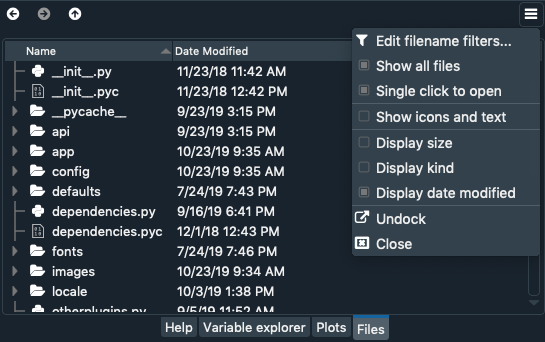

File management improvements in Spyder4
Version 4.0 of Spyder—a powerful Python IDE designed for scientists, engineers and data analysts—is almost ready! It has been in the making for well over two years, and it contains lots of interesting new features. We will focus on the Files pane in this post, where we've made several improvements to the interface and file management tools.
Simplified interface
In order to simplify the Files pane's interface, the columns corresponding to size and kind are hidden by default. To change which columns are shown, use the top-right pane menu or right-click the header directly.

Custom file associations
First, we added the ability to associate different external applications with specific file extensions they can open. Under the File associations tab of the Files preferences pane, you can add file types and set the external program used to open each of them by default.
Once you've set this up, files will automatically launch in the associated application when opened from the Files pane in Spyder. Additionally, when you right-click a file you will find an Open with... option that will show the application associated with this extension.
Single click open option
We've added a new option to open files and directories with a single-click instead of a double-click, to suit different user preferences. To enable this option, go to the General tab of the Files preferences pane and check the option Single click to open files. With this setting, only a single click is needed to open a file in the Files pane either externally or in Spyder.
Bear in mind that changing this configuration option will also affect the behaviour of the Project Explorer pane.
Open files externally
We added the option to open files with the operating system's default program for the file type to the Files pane's context menu. To use this feature, right-click any file in the Files pane and click Open externally.
Moreover, it is now possible to select more than one file on which to perform a context menu action, thanks to the Files pane's new multi-select functionality. For this, press Ctrl (Cmd on macOS) or Shift while clicking on the files to select, just as you would in your operating system's file manager (Windows Explorer, macOS Finder, etc). As you'd expect, Ctrl (Cmd) selects individual files one by one, while Shift selects all the files between the one you click and the one previously selected.
Once you've selected multiple files, it is now possible to execute many of the actions available in the context menu on all the selected files, including delete, rename, move, copy and open externally.
Absolute and relative path handling
Spyder 4 now allows you to easily copy the absolute or relative paths of one or more files in the Files pane and pasting them as well-formatted text anywhere else in Spyder. Just right-clicking any file or files in the Files or Project panes and select the desired option.
Beyond just copying a single path, when pasting more than one Spyder will intelligently format it into a comma-separated collection of quoted strings, one path per line, that can be pasted directly into a list with no additional formatting needed.

The Copy Absolute Path option gets us the complete path of each selected file, starting from the drive root.
Alternatively, Copy Relative Path gets us the path of the file relative to the current working (displayed in the top right of the Spyder window).
File type icons
Finally, files in the Files pane are now displayed with icons depending on their type. There are custom icons for the source files of a variety of common programming languages including C C++, C Sharp, Java, Python, R, and Swift; for media types like JPEG, MP3, and M4A; and for other common extensions such as .txt and .tex. This allows you to identify file types with just a glance and select the appropriate application accordingly.
With these new features and UI options in Spyder's Files pane, we hope you will enjoy the improved file management experience coming in Spyder 4! We would like to thank Quansight, our donors, and most of all our dedicated users and contributors from around the world for making these features possible. The final version will be released very soon, but if you'd like to try it out now and share your feedback, follow the instructions on our Github. Happy Spydering!